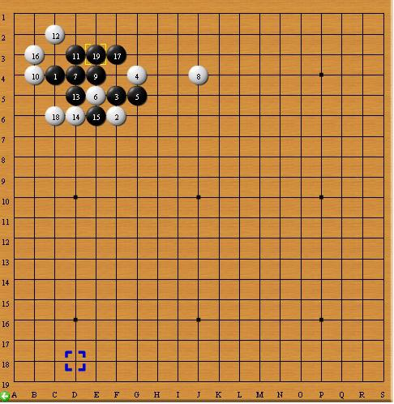
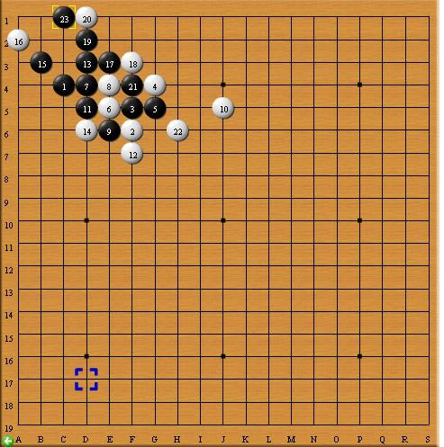

【暑假杯】 一招不慎 满盘皆输
首页
五子棋交流
#1 【暑假杯】 一招不慎 满盘皆输 作者：蓝天蓝 发表时间：2014-6-5 16:24:40
2013年暑假杯家族争霸赛2台选手对局晴空棋评
第四轮：【讲五堂】jwt2 （假先胜）VS 【圣棋盟】fengyu（黑）
http://game.freewzq.com/offlineDisplayGame.html?html=5696731&id=2194
一招不慎 满盘皆输
时间：2013年8月25号 地点;新慢棋网
棋局总谱
1：【相互牵制】双方相互牵制。
实战图如下：
【讲五堂】jwt2先手下在边角C4（这个点比C3有一些优势。所以【圣棋盟】fengyu选择交换。.白棋2手防于F6.(这样的开局在前面几盘已经见过多次)。黑3 下在F5.(贴着白棋2手限制其向四周做棋。白棋4手防于H4.(主要防止黑棋可能的在H4点的做棋。这时候的白棋切不可贸然进攻)
（见参考图一）
参考图一如下：
如图所示。如果白棋4手活二的话，就会出现这样的局面。从盘面来看，明显的黑棋取得外势。
2【继续牵制】双方继续牵制。
实战图如下：
黑棋5手下在G5(这手棋黑棋主要是想断开白棋2手和4手的连接)。白棋6手挡住黑棋的活二，同时自己趁机活二。黑棋7手挡住白棋的这个活二（这手棋下得不错）（见参考图二;）。
参考图二如下：

从图上看如果黑7不堵白棋的这个活二的话，白棋活三冲下来是有机会胜的。白棋8手（可以把这手棋看做是白棋防黑棋的活二，因为黑棋一旦活二，将引起一系列的子力连接。）（见参考图三）
参考图三如下：

从图上看，如果白棋8手不堵的话，黑棋连攻胜。
同时，我们也可以把它当成白棋准备进攻的信号。（见参考图四）
参考图四如下;
白棋借助8手活三，如果黑棋处理不当，白棋速胜。
3【谨慎防守】双方谨慎防守。
实战图如下：
黑棋9手挡住白棋的活二。同时与黑1形成跳活二。白棋10手挡住黑棋的这个跳活二。（见参考图五）。
参考图五如下：

如果任由黑棋的活二变成活三的话，黑棋就连攻胜了。11手黑棋做棋（见参考图六）。
参考图六如下：
从图上看，如果任凭黑棋11手做棋成功，黑棋可以连攻胜。白棋12手挡在C5点。（其实黑棋的11手要想做棋成功离不开C5点，所以白棋提前占住这个点，从而粉碎黑棋的想法。）。黑棋13挡在D5点（意图很明显，就是想双活三或者四三。）白棋14手挡上面（这手棋既粉碎了黑棋的三三同时又破坏了黑棋的四三）。
4【外围布局】黑白外围开始布局。
实战图如下：
黑棋15手率先跳出边角区域，向开阔地带做棋（这手棋即可以看做是挡白棋的冲二，又可以看作是黑棋想在开阔地带做棋）。白棋16手与4手形成跳活二。（见参考图七）。
参考图七如下：
如果白棋这个活二活三成功的话，白棋直接连攻胜了。黑棋17手阻断白棋4手和16手的连接。白棋18手防止黑棋的冲四，同时与16手形成活二。（见参考图八）。
参考图八如下：
如果白棋的这个18手活二黑棋不挡的话，白棋就可以连攻，扩大地盘。黑棋19手挡下面（这样既可以挡住白棋的这个活二，防止这个活二冲下来后连续活三，又可以形成跳三。见参考图九）。
参考图九如下：
白棋20手如果不挡在H6的话，黑棋就可以连续2次冲四来扩展地盘。同时白棋的这个20手还是一个进攻的棋（见参考图十）。
参考图十如下：
白棋20手连续向外冲四，然后连攻胜。
5：【白棋连攻】白棋连续进攻。
实战图如下：
21手黑棋正常挡在J6防止黑棋往右连续冲四。22手白棋J4活三。
黑棋23手档上面。白棋24手做棋。白棋25手只能挡在J4.（见参考图十一）。
参考图十一如下：
从图上看，如果黑棋25手先活三的话，也是可以的。估计当时白棋24手的复杂变化，让黑棋谨慎了起来。
6:【一招不慎】黑棋防守失误。
实战图如下：
白棋26手活三，黑棋挡下面（黑棋也是出于控制棋面外势的考虑）但是也正是因为黑棋的这个27手才使得白棋能够速胜。白棋28上面做一手棋。黑棋29挡上。30白棋冲四同时活二。（此时白棋 胜券在握）。
7 ：【白棋凯旋】 白棋连攻胜
实战图如下：
白棋32手，34手连续活三，黑棋35手活三强防（但无奈白棋左边有个冲四。）战至36手黑棋见无力回天，投子认输。